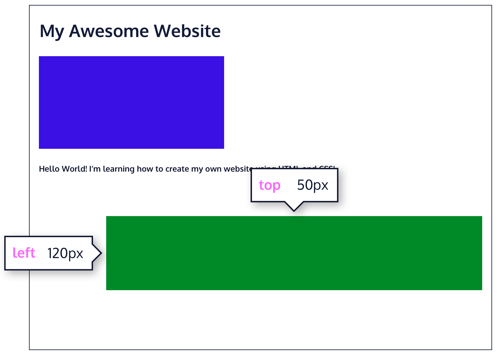
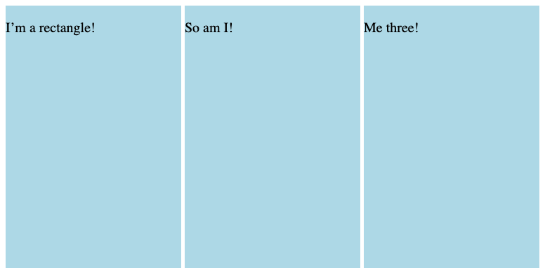
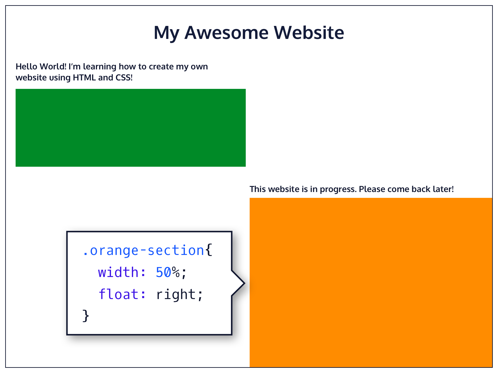

CSS Display & Positioning CheatSheet
Notes from Codecademy Fundamentals of CSS
z-index
z-index: [int];
- Specifies how far back or forward
an element appears when a web oage overlaps
- [int] value can be positive or negative
- Element with highest [int] appears in foreground, while lower z-index
values appear further back
position
position: static;
- Default value, does not need to be specified
position: relative;
- Positions an element relative to where it would have
originally been on the web page
- Must have at least one of the
offset properties (top, bottom, left, right)
- Offset properties, measured in px, em, or %, specify distance
FROM the top/bottom/left/right to the element

position: fixed;
- Element with a fixed position is pinned to a specific spot
on the page, regardless of scrolling
- Example: a navigation bar at the top of a page (may use offset
properties top: 0px and left: 0px)
position: absolute;
- All other elements ignore an absolute element and act like
it is not on the page
- Removes an element entirely from the document flow
- Example: a pop-up coupon on a shopping website
- Positioned relative to its closest parent element;
offset properties can be used to modify positioning
position: sticky;
- Uses top offset property
- When the element is the specified distance from the top, it sticks
to the position it is in as you continue scrolling
- Once it reaches the bottom of its parent container, it unsticks
display
display: inline;
- Takes up as little space as possible
- Appears on same line as other inline elements
- Can't have width/height manually adjusted
- Examples: Strong or Emphasis tags; Anchor for hyperlink
display: block;
- Fill entire width of page by default, but width can be manually set
- Examples: headings, paragraphs, divs, footers
display: inline-block;
- Can appear next to each other and also have
width and height manually adjusted

float
float: left;
float: right;
- Determines how far left or right an element should float within its parent element
- Width must be specified
- Commonly used for wrapping text around an image

clear
clear: left;
clear: right;
clear: both;
- Specifies if a specific side of an element should not be
touched by any other element within the contianing element
- Usually used in combination with float